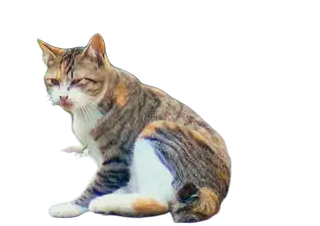

いつも、猫がいます。
ホームページの右下に、背景を透過した実写の猫を常時表示しています。約20秒の毛づくろいの動きを繰り返します。

素材：ユーザー提供動画「neco06_720.mp4」の先頭約20秒。背景をフレームごとに自動除去し、透過アニメーションWebPへ変換しています。細い毛やひげの縁には多少の揺らぎがあります。
猫を呼ぶボタンと画像のランダム表示は取り外しました。端末で動きを減らす設定が有効な場合は、同じ猫の静止画を常時表示します。
ホームページの右下に、背景を透過した実写の猫を常時表示しています。約20秒の毛づくろいの動きを繰り返します。

素材：ユーザー提供動画「neco06_720.mp4」の先頭約20秒。背景をフレームごとに自動除去し、透過アニメーションWebPへ変換しています。細い毛やひげの縁には多少の揺らぎがあります。
猫を呼ぶボタンと画像のランダム表示は取り外しました。端末で動きを減らす設定が有効な場合は、同じ猫の静止画を常時表示します。